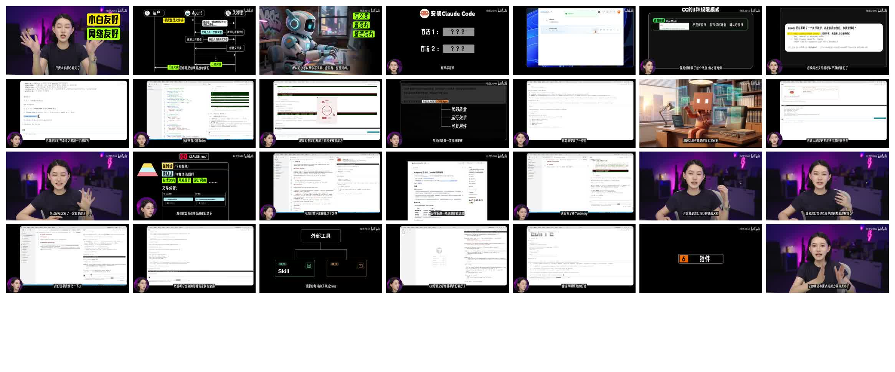
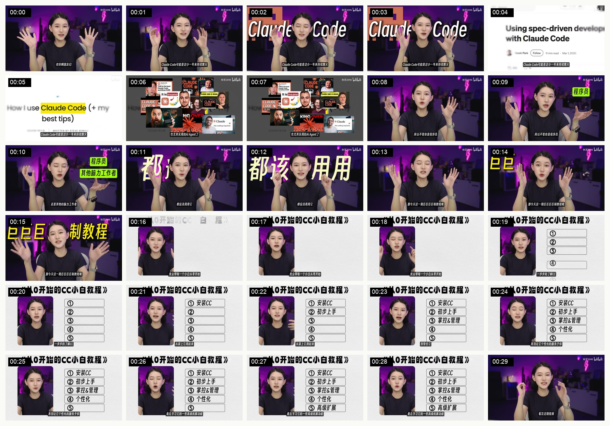
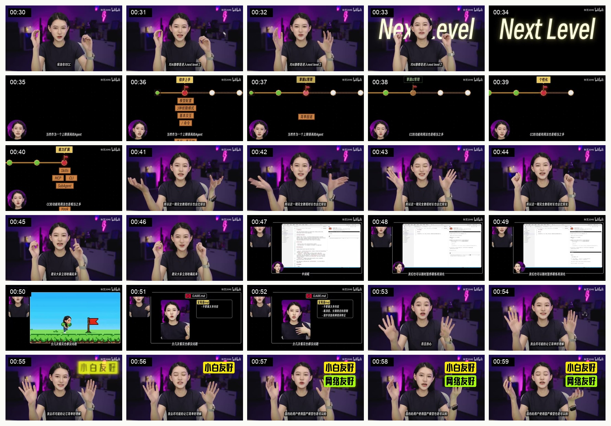
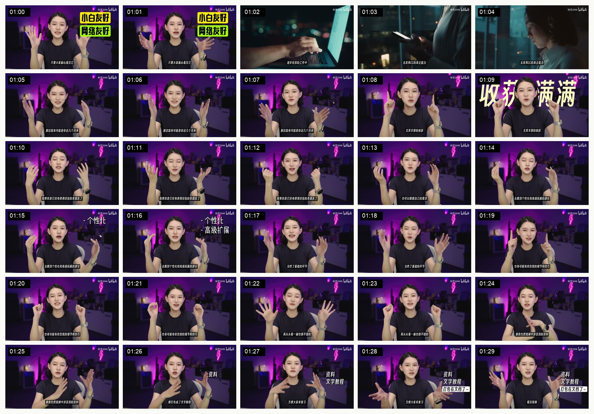
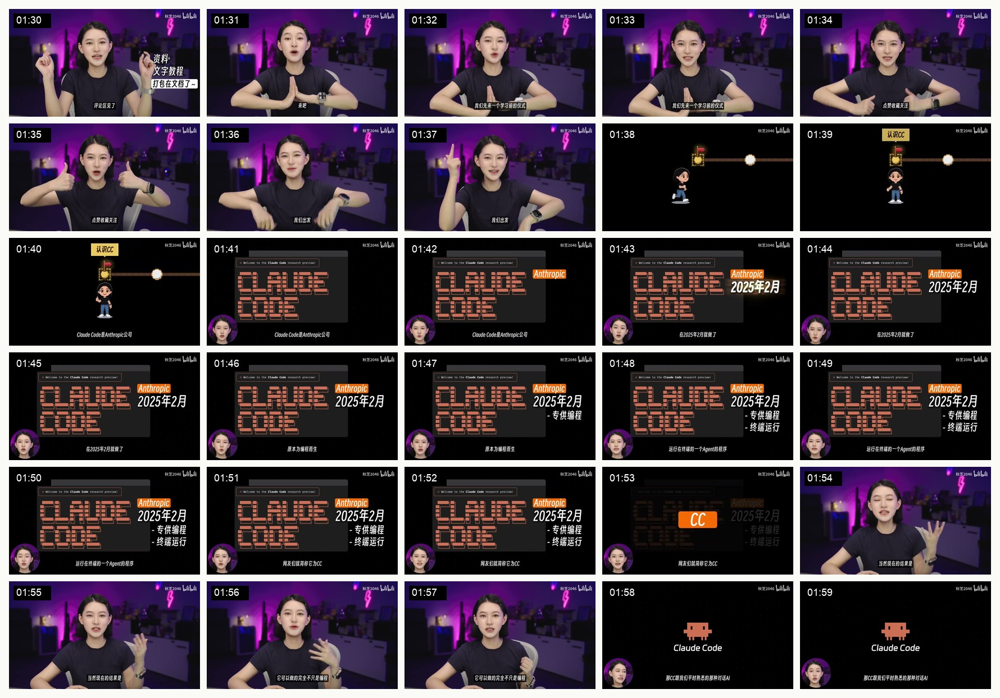

Claude Code 教程拉片
这不是纯 MG 片，而是“真人讲解 + 动态标注 + 课程路线图 + 屏幕演示”的教程型 explainer。
它好看的核心不是“画面多高级”，而是每 10 秒都在解决观众的一个疑虑：我为什么要看、我能不能学会、这 60 分钟会讲什么、我应该从哪里开始。
如果做工具教程或 AI 工作流科普，可以学它的“信任锚点 + 承诺标签 + 路线图”结构；如果做纯 MG explainer，不要照抄真人和屏录，而要把这些功能转译成图形语言。
素材





它属于什么风格
Creator-led tutorial explainer
真人是信任入口。观众不是先被动画吸住，而是先相信这个人能讲明白。
Overlay-heavy course video
大量黄色、绿色、白色标签不是装饰，而是在替观众做笔记。
Roadmap-first teaching
先把课程地图摊出来，再进入知识点。长视频因此不显得散。
0-2 分钟精拉
| 时间 | 叙事任务 | 画面手法 | 为什么有效 | 可迁移到我们的片子 |
|---|---|---|---|---|
| 0:00-0:08 | 先抛出主题强度：Claude Code 是近期非常值得关注的 AI Agent。 | 真人中景开场，背后紫色灯光形成频道识别；随后叠加大号 Claude Code 字样、网页截图和多张海外教程缩略图。 | 真人保证亲近，外部截图证明热度。开头没有抽象讲概念，而是先告诉观众“这东西已经很火”。 | Loop Engineering 开头也应该先建立“它为什么突然值得讲”，再进入定义。 |
| 0:08-0:13 | 明确目标观众：不只程序员，其他脑力工作者也相关。 | 右侧跳出荧光黄标签“程序员”“其他脑力工作者”，真人手势指向画面空间。 | 标签非常直白，观众不用从口播里猜自己是否属于受众。荧光色有短视频平台的强提醒感。 | 我们的受众也要被明确点名：用 ChatGPT、Codex、Claude Code 工作和创作的人。 |
| 0:14-0:29 | 给出课程承诺：从零了解、安装、配置、管理、个性化、高级扩展。 | 切到白底课程卡，左侧保留真人小窗，右侧列表逐条填入，标题像文档大纲。 | 60 分钟教程最怕观众觉得“太长太乱”。这里用菜单先降焦虑：你会知道接下来会获得什么。 | 如果做 Loop Engineering 长一点的解释，开头也需要一张“这期讲什么”的路线图，而不是一直口播铺垫。 |
| 0:30-0:34 | 制造结果感：看完会进入下一层级。 | 真人画面后方放大 “Next Level”，随后单独切成黑底发光字。 | 这是情绪性承诺，不解释知识点，只给观众一个结果想象。 | 可以用于片尾或章节转折，但要克制。我们的片子如果太早喊结果，会显得营销。 |
| 0:35-0:40 | 承认内容很长，同时说明怎么学。 | 黑底路线图，多个节点从左到右排列；小头像在左下角持续讲解；节点上方出现“初步上手 / 掌控管理 / 个性化 / 能力扩展”等标签。 | 这是一张“导航图”。它把长教程变成一条路，观众知道自己正在第几站。 | 如果我们做系列或长视频，路线图比单纯分镜更重要。每章要让观众知道自己在哪里。 |
| 0:41-0:52 | 降低难度预期：会尽量讲简单，可以暂停、跟练。 | 回到真人；穿插屏幕演示窗口、小游戏式过关画面、黑底总结卡。 | 它没有只说“很简单”，而是用“可跟练”的视觉暗示告诉观众：这是一个可以操作的教程。 | 我们的 explainer 如果不是教程，可以少用屏幕演示；但要学它的“把承诺可视化”。 |
| 0:55-1:01 | 处理国内用户疑虑：小白友好、网络友好。 | 荧光标签在右侧竖排出现，真人继续正面讲解。 | 这是痛点标签。它命中观众最容易关掉视频的理由：怕学不会、怕网络环境麻烦。 | Loop Engineering 也需要类似痛点标签：不是“概念新”，而是“你正在调度 AI 到很累”。 |
| 1:02-1:08 | 短暂拔高：Claude Code 代表新的工作方式。 | 插入三段偏电影感的素材：深夜电脑、手机、人物侧脸。色调从紫色房间切到青绿色夜景。 | 这几秒不是讲知识，是给“AI 正在进入工作”制造现实感。它让教程不只是软件说明书。 | 纯 MG 片也需要这种“现实落点”。抽象概念讲太久，观众会失去代入。 |
| 1:09-1:30 | 提示已有经验者可以跳看，并说明资料已打包。 | 大字“收获满满”出现；右侧依次出现“资料 / 文字教程 / 打包在文档了”。 | 它对不同层级的观众都给了入口：新手完整看，老手跳到高级章节，收藏党拿资料。 | 对于我们的研究型视频，也可以给观众“看完能拿走什么”，但不要过度做成卖课感。 |
| 1:31-1:40 | 把观众从开场带进第一章：认识 CC。 | 真人做点赞/关注引导后，切到黑底像素路线图；小人走到第一个节点“认识 CC”。 | 这是一种明确的章节门。前面是开场，进入黑底路线图后，观众知道教程正式开始。 | 我们的样片也需要章节门：从“热词和痛点”切到“问题是什么”。 |
| 1:41-2:00 | 定义 Claude Code：Anthropic、2025 年 2 月、终端里的 Agent 程序。 | 黑底卡片，像素风 Claude Code 标题，右侧逐项出现 Anthropic / 2025 年 2 月 / 专供编程 / 终端运行；左下角保留头像讲解。 | 这里建立了后续教学模板：主概念居中，事实标签在右侧，讲解者头像保留在边角。信息密度高但不散。 | 定义类段落可以用这种固定模板：主词 + 3 个事实标签 + 讲解声音。不要每句都换风格。 |
为什么它看起来有效
1. 先解决观看动机，再解决知识点
前 100 秒几乎没有真正教学，它在做四件事：证明主题重要，点名受众，列出路线图，降低学习门槛。
这对长教程尤其关键。观众不是不知道知识点重要，而是不确定自己有没有必要花一小时。
2. 真人和图形各司其职
真人负责信任、语气、陪伴感；图形负责压缩信息、做重点、给结构。
所以它不是“真人加一点装饰”，而是“真人讲解 + 视觉笔记系统”。
3. 标签是观众的心理锚点
“程序员”“其他脑力工作者”“小白友好”“网络友好”这些词并不复杂，但非常有效。
它们不断回答观众心里的问题：这和我有关吗？我能学会吗？我现在要不要继续看？
4. 路线图让长内容变短
黑底路线图不是为了炫动画，而是为了把 60 分钟切成可理解的旅程。
观众只要知道当前在第几站，长视频就不会显得像一团信息。
和上一条 ISO 纯 MG 参考的区别
| 维度 | Claude Code 教程 | ISO 技术 MG 片 | 我们怎么取舍 |
|---|---|---|---|
| 信任来源 | 真人出镜、语气、UP 主人设。 | 视觉质感、图解严谨、旁白控制。 | 如果我们不出镜，就要用更强的图解逻辑和材料可信度补信任。 |
| 节奏 | 高频标签、教程菜单、口播推进。 | 慢一点，靠物体运动和镜头变化推进。 | 短视频开头可以学高频标签，解释核心概念时要学 ISO 片的克制。 |
| 画面复杂度 | 信息密度高，适合教程。 | 元素少，适合抽象概念。 | Loop Engineering 如果做纯 MG，不应堆太多词；如果做教程，可接受更高信息密度。 |
| 可复制性 | 更容易复制：真人、标签、路线图、屏录。 | 更难复制：需要统一的视觉隐喻和精细动画。 | 生产效率优先时学 Claude Code 教程；精品 MG 优先时学 ISO 片。 |
可提炼的方法
开头 30 秒
主题热度 + 目标人群 + 课程承诺。不要急着定义概念。
30-60 秒
路线图 + 学习方式。承认内容长，但告诉观众怎么消化。
60-120 秒
降低阻力 + 进入第一章。先处理观众顾虑，再正式教学。
对 Loop Engineering 样片的建议
| 问题 | 从这条片子学到的解决办法 |
|---|---|
| 开头只讲概念，容易像科普论文。 | 先用一句强痛点点名观众：你以为 AI 在替你干活，实际上你在一轮一轮调度 AI。然后再讲 Loop Engineering。 |
| 抽象术语太多，观众不知道和自己有什么关系。 | 像它一样使用受众标签，但画面保持极简：一个人、一个 AI、一个循环。不要把 Codex、Claude Code 都画出来。 |
| 长解释容易散。 | 需要一张路线图，提前告诉观众：热词怎么来的、旧模式怎么卡住、循环工程改变了什么、边界在哪里。 |
| 纯 MG 容易缺少信任。 | 用真实来源补信任：Boris / Peter / Addy 的事件线可以承担真人出镜的“可信锚点”。 |
说明：本拉片使用本地抽帧和 0-2 分钟样片分析；字幕转写为自动识别，仅作为辅助，不作为逐字引用依据。